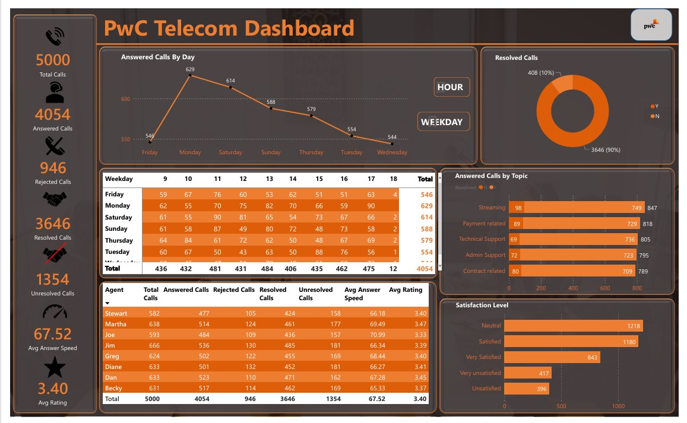

Hi there! 👋 I'm a Data Analyst, also known as the "Data Whisperer." While others see spreadsheets as a jungle of numbers, I see a treasure map leading to actionable insights (and sometimes a coffee break).
Armed with tools like Excel, Power BI, and SQL, I can turn chaos into clarity faster than you can say "pivot table." My superpower? Spotting patterns that others miss—whether it’s a sales trend or the hidden stash of snacks in the office kitchen.
When I'm not analyzing data, you’ll find me decoding the mysteries of the universe (or at least trying to figure out why my plants keep dying 🌱). I’m all about making data fun, accessible, and a little less intimidating—because let’s face it, numbers are just people too... sort of.
So, if you need someone to crunch the numbers, tell their story, and maybe sneak in a dad joke or two, I’m your person!.

This dashboard provides a comprehensive analysis of the under-75 mortality rate among adults with severe mental illness. Explore total deaths, detailed breakdowns by underlying causes, geographic locations, and gender. Gain valuable insights into disparities, contributing factors, and areas of focus to drive targeted interventions and improve health outcomes.

This dashboard offers an in-depth overview of women’s smoking status at the time of delivery, featuring data on population size, regional distributions, and breakdowns of smokers, non-smokers, and undisclosed statuses by year. Uncover critical trends and regional patterns to inform health policies and targeted interventions for maternal and child well-being

The call center manager needs the analysis in order to understand customer behavior and what they are calling for and to to also understand how well the agents are handling the calls and whether the issues being called about is being resolved as this would go a long way improving the company’s services and customer satisfaction is paramount to any business.

Dive into a comprehensive summary of FIFA World Cup statistics, featuring goals scored, team performance, points earned, wins, losses, and participating countries. Explore key metrics and trends that showcase the journey of nations competing on the world's biggest football stage. Uncover insights that celebrate the passion, triumphs, and spirit of the beautiful game!

This dashboard provides a detailed overview of patient demographics, showcasing the total number of inpatients and outpatients segmented by age groups. Gain actionable insights into patient trends, enabling data-driven decisions to enhance healthcare delivery and resource allocation.

This dashboard shows a comprehensive overview of the space mission analysis carried out between 1957 and 2022 and visualize the amazing History of space travel.

Unicorn companies refer to privately held startups that have achieved a valuation of over $1 billion. The term "unicorn" was coined to highlight the rarity of such high-valued startups, emphasizing their uniqueness in the business world.
This Analysis spans from year 1900 to 2021

Nigeria, like many other countries, has been significantly impacted by the COVID-19 pandemic. Here are some key points regarding COVID-19 in Nigeria
KPIs: ✪ Total Cases = 267k ✪ Discharged Cases =260k ✪ Active Cases = 4k ✪ Deaths = 3k ✪ States Affected = 37